五十嵐 亮介・徳島大学卒
職場の雰囲気は明るく、困ったことや気になることがあれば相談しやすい環境だと感じています。歯科医師だけでなく、衛生士さんや受付スタッフも含めて、患者様のためにどうするのが良いかを自然に話し合えるところが、この医院の良さだと思います。
固定給の安心感と、先輩ドクターによる丁寧な指導。
自分に合った働き方で、歯科医師としての未来を築く。
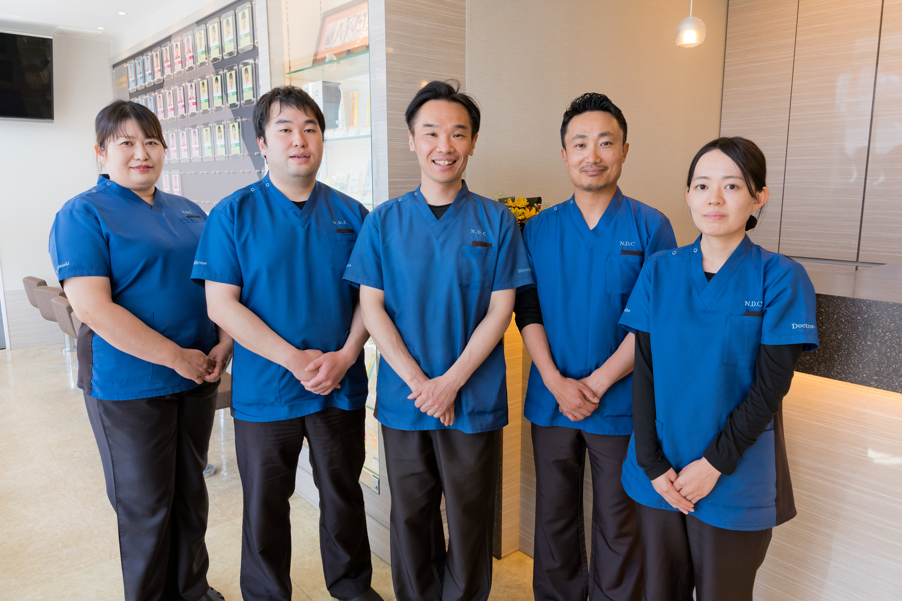
CLINIC SCALE & SUPPORT
最新設備と、相談しやすいフラットな診療環境が整っています。
 先輩Drによる丁寧な診療サポート
先輩Drによる丁寧な診療サポート
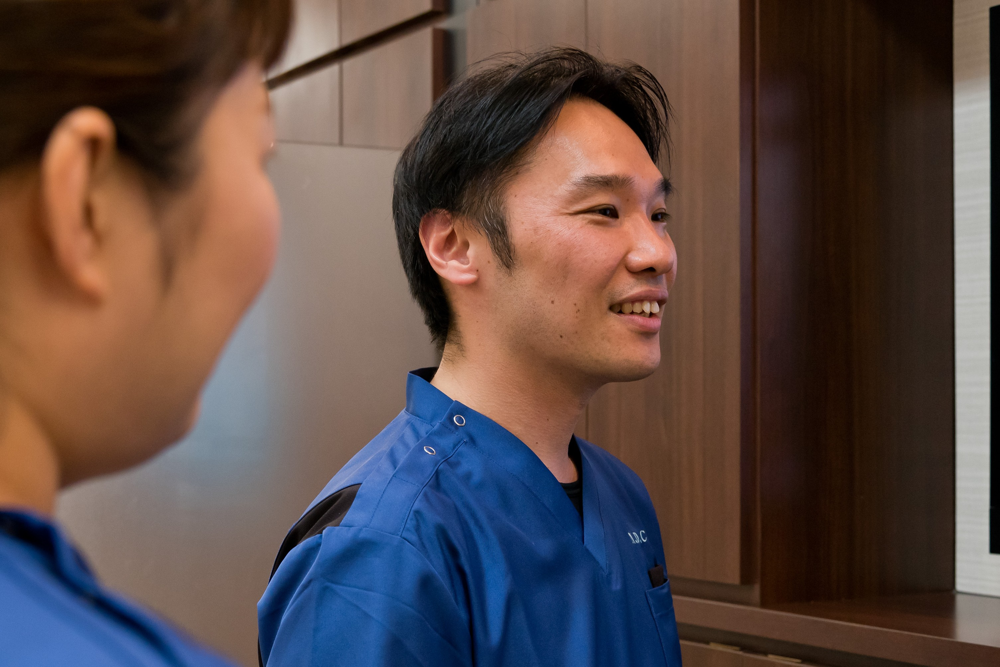
模型実習から段階的にステップアップ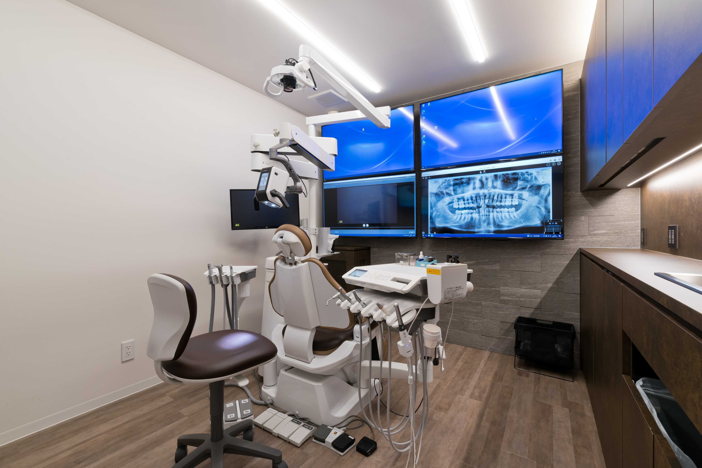
チェア16台・CT完備の充実設備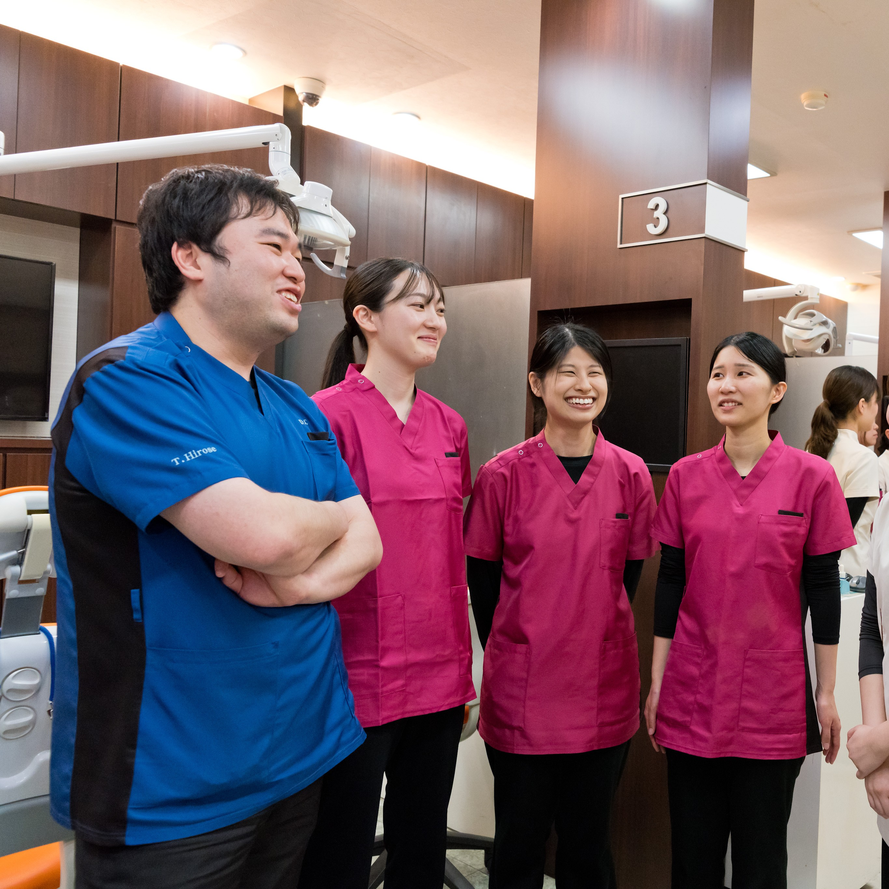
47名のスタッフで休暇も互いにフォロー勤務日数によって成長の機会を制限することはありません。臨床に打ち込みたい方も、自分の時間をゆったり楽しみたい方も、どちらも対等な正社員キャリアとして選べます。
「若いうちに現場でどんどん経験を積みたい」「インプラントや外科にも積極的に挑戦したい」という先生に最適。日々の診療と先輩Drのフィードバックで、確かな技術が身につきます。
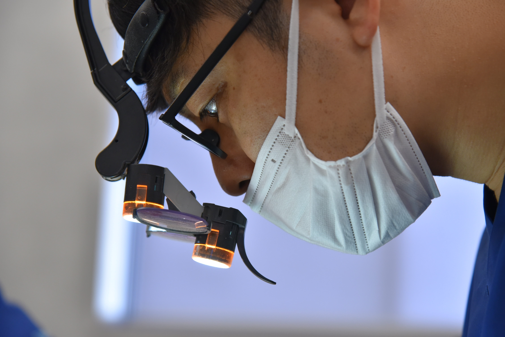

「旅行や趣味、習い事の時間も大切にしたい」「心身にゆとりを持って長く働き続けたい」という先生に最適。週4日でも教育カリキュラム・担当Drの指導は変わらず受けられます。
少人数の医院では「自分が休むと診療が回らない」と遠慮しがちですが、当院には9名の歯科医師と豊富なスタッフが在籍。希望休や有給休暇の取得時も、チーム全体で自然にフォローし合える体制が整っています。
5つの質問に答えるだけ。あなたにぴったりの働き方を見つけてみましょう。
※週4日・週5日のどちらを選んでも、基礎から段階的に成長できる教育環境をご用意しています。
若手のうちは、技術や経験を積むことが何より大切な時期。だからこそ、当院では安定した固定給をベースに、安心して臨床に取り組める給与体系を整えています。
※基本給339,000円＋固定残業代（45時間分）111,000円＋住宅手当50,000円＋交通費5,000円を含みます。
※月額総支給額×12か月で算出した参考年収です（住宅手当・交通費を含む／賞与等は含みません）。住宅手当は遠方から当院近辺に転居する常勤歯科医師が対象です。
支給合計には「基本給 ＋ 固定残業代 ＋ 住宅手当（50,000円）＋ 交通費（5,000円）」を含みます。固定残業代は設定された時間分の時間外労働に対する手当として支給し、設定時間を超えた時間外労働については超過分を別途支給します。
| 卒後年数 | 基本給 | 固定残業代 | 固定残業時間 | 支給合計 |
|---|---|---|---|---|
| 2年目 | 339,000円 | 111,000円 | 45時間 | 505,000円 |
| 3年目 | 354,000円 | 116,000円 | 45時間 | 525,000円 |
| 4年目 | 377,000円 | 123,000円 | 45時間 | 555,000円 |
| 5年目 | 415,000円 | 135,000円 | 45時間 | 605,000円 |
| 6年目 | 452,000円 | 148,000円 | 45時間 | 655,000円 |
| 7年目以降 | 477,000円 | 173,000円 | 50時間 | 705,000円 |
支給合計には「基本給 ＋ 固定残業代 ＋ 住宅手当（50,000円）＋ 交通費（5,000円）」を含みます。固定残業時間を超えた時間外労働については超過分を別途支給します。
| 卒後年数 | 基本給 | 固定残業代 | 固定残業時間 | 支給合計 |
|---|---|---|---|---|
| 2年目 | 271,600円 | 73,500円 | 30時間 | 400,100円 |
| 3年目 | 283,700円 | 76,800円 | 30時間 | 415,500円 |
| 4年目 | 302,100円 | 81,800円 | 30時間 | 438,900円 |
| 5年目 | 332,500円 | 90,000円 | 30時間 | 477,500円 |
| 6年目 | 362,100円 | 98,000円 | 30時間 | 515,100円 |
| 7年目以降 | 382,200円 | 137,900円 | 40時間 | 575,100円 |
当院では、日々の診療に必要な練習は基本的に診療時間内に行っています。さらに技術を磨きたい、もっと練習したいという先生の意欲も応援できるよう、固定残業時間（週5日：45時間／7年目以降50時間、週4日：30時間／7年目以降40時間）には自主的な練習・研鑽に取り組む時間も考慮して余裕を持って設定しています。
※給与明細上の「固定残業時間」と実際の残業時間は異なります。実際の残業時間が固定残業時間に満たない場合も満額支給し、万が一設定時間を超えた場合は超過分を別途全額支給いたします。
「いきなり難しい治療を任されたらどうしよう」という不安は必要ありません。当院が最も大切にしているのは、基礎からきちんと指導する安心感です。
診療中に迷ったときも、すぐ横の先輩ドクターに相談・確認できる環境を整えています。
診療後の振り返りや、パノラマ・口腔内写真を用いた症例検討で、一つひとつの治療の根拠を丁寧に共有します。
技術の習得状況や今後の目標、働き方の希望について院長とじっくり話せる時間があります。

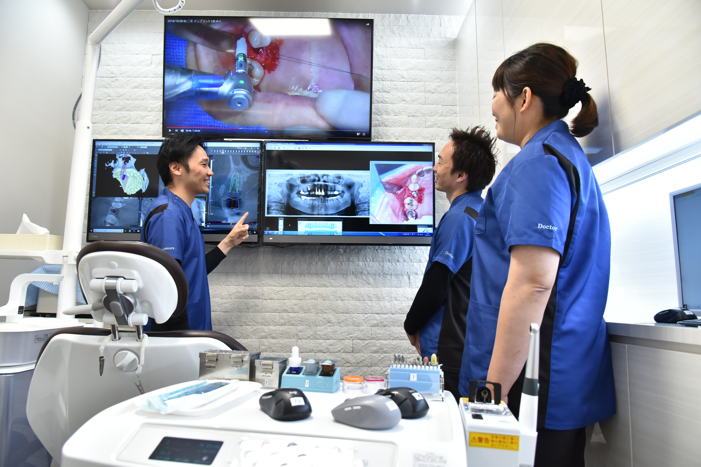
※下記は成長の目安です。年次によって一律に治療を任せるのではなく、一人ひとりの習熟度や経験に合わせて一本の道を段階的に進みます。
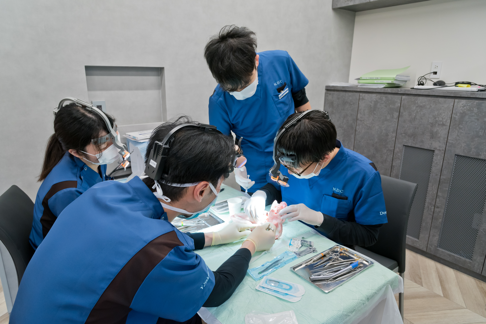
まずは歯科医師としての揺るぎない土台をつくる期間。模型実習と先輩Drのマンツーマン指導から始めます。

1年目で身につけた基礎を土台に、担当患者様の初診から治療完了まで一貫して向き合い、臨床力を広げます。
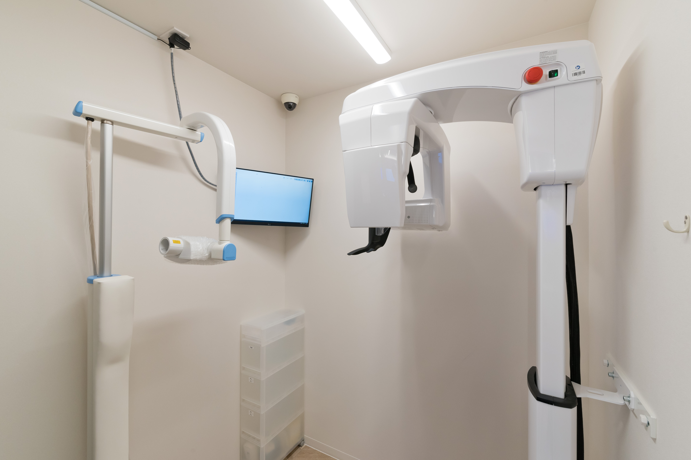
確かな一般臨床の土台があるからこそ、インプラントや外科・マウスピース矯正へ安全に挑戦できます。
参加したいセミナーや学びたい分野があれば、ぜひ相談してください。医院規定に基づく参加費用の補助制度を設けていますが、本人の学ぶ意欲や必要性に応じて、規定以上の費用を医院が負担しているケースも多くあります。
これまでにも高額なセミナー受講費用を医院が全額負担した実績があります。院長指定セミナーだけでなく、先生ご自身が希望するセミナーにも積極的に対応しています。
※医院指定セミナーは全額医院負担。希望セミナーについては下記規定をベースに、意欲や内容に応じて柔軟に支援します。
| 勤続年数 | 1年目 | 2年目 | 3年目 | 4年目以降 |
|---|---|---|---|---|
| 医院負担割合 | 20% | 30% | 40% | 50% |
| 年間上限額 | 10万円 | 20万円 | 30万円 | 40万円 |
将来やりたい分野がまだ決まっていなくても大丈夫です。まずは一般歯科の基礎を固め、興味を持った専門治療へ安全に挑戦できます。
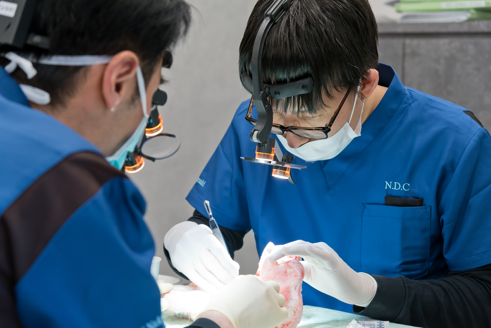
保存・歯内療法・歯周治療・補綴など、歯科医師の土台となる幅広い一般臨床を確実に習得します。
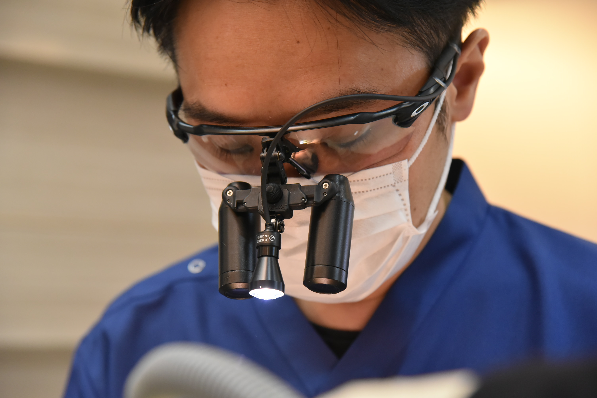
未経験からでも安全第一で習得できる実践的ステップを用意。院長のフルサポートのもとで経験を積めます。
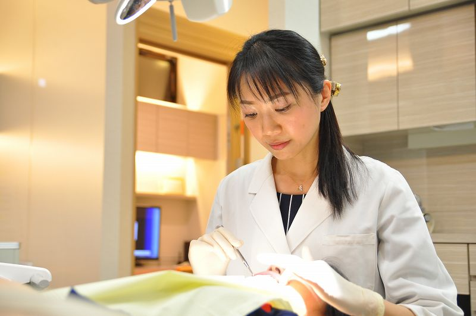
一般臨床を土台に、インビザラインなどのマウスピース矯正治療にも知識・技術を広げられます。
岡山から新幹線を利用して通勤するドクターも在籍しています。交通費は全額支給。福山市外から通勤する先生も安心して働ける環境を整えています。
産休・育休の取得率100%・復職率100%に加え、男性歯科医師の育休取得実績もあります。性別に関係なく、家族との時間やライフステージの変化に合わせて長く働き続けられます。
大学院での研究や学業と両立しながら、臨床経験を積みたい先生へ。当院では大学院生のアルバイト勤務も募集しています（岡山方面からの新幹線通勤実績あり・交通費全額支給）。
歯科医師9名を含む47名のチームで診療しています。

院長 中村幸生／2001年 神奈川歯科大学卒業／厚生労働省指定 歯科医師臨床研修指導歯科医／OSSTEM IMPLANT 臨床研究歯科医院（2022年認定）
これから歯科医師として一歩を踏み出す皆さん、はじめまして。なかむら歯科クリニック院長の中村幸生です。皆さんは今、3年後、5年後、10年後の自分の姿を思い描けていますか？大きな希望と共に、将来への漠然とした不安も感じているかもしれません。
私自身、研修医時代は厳しい環境に身を置き、がむしゃらに勉強と臨床に打ち込む毎日でした。厳しい競争の中、優れた先輩たちから技術や知識を吸収し、休みの日にはセミナーへ駆け込む。その中で「もっと上手くなりたい」という情熱が、私を突き動かす原動力となりました。
私が目指すのは、単に治療技術を教える場ではありません。「いつまでも美味しくご飯が食べられるように」という理念のもと、患者様を笑顔にし、その笑顔を守る「人財」を育てることです。
学生時代の経験や現在の自分に自信がなくても、何も心配はいりません。大切なのは「これからどうなりたいか」「何を成し遂げたいか」という熱い想いです。歯科医師人生の基盤となるこの最も大切な時期を、どこで、誰と、どう過ごすか。私たちの情熱を肌で感じてみませんか。
職場の雰囲気は明るく、困ったことや気になることがあれば相談しやすい環境だと感じています。歯科医師だけでなく、衛生士さんや受付スタッフも含めて、患者様のためにどうするのが良いかを自然に話し合えるところが、この医院の良さだと思います。

全ての症例に対して治療計画立案から治療終了まで1人で行うことができます。また症例相談したい場合や、治療で助けが必要になった場合は院長をはじめ、他の先生方がフォローしてくださるので安心です。私は治療時間が押してしまった時にはいつも助けていただいています。

就職前に、見学した風景と自分が勤務してから見る風景に差がなかったことは良かったです。スタッフ同士も仲が良く、勤務しやすいと考えています。また、採用面接時に、自分が希望していた自費治療も手掛けることができ、大変満足しています。
見学のみOK・ZOOM面接可・LINE相談可
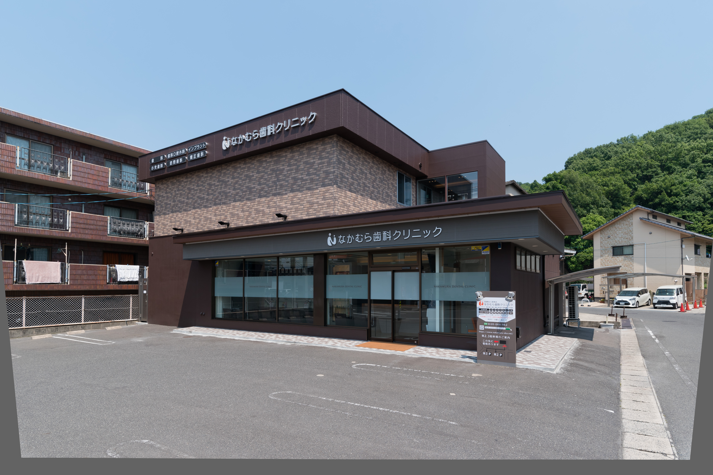
面接なしで、医院の雰囲気や診療体制を見ていただくだけでも大歓迎です。
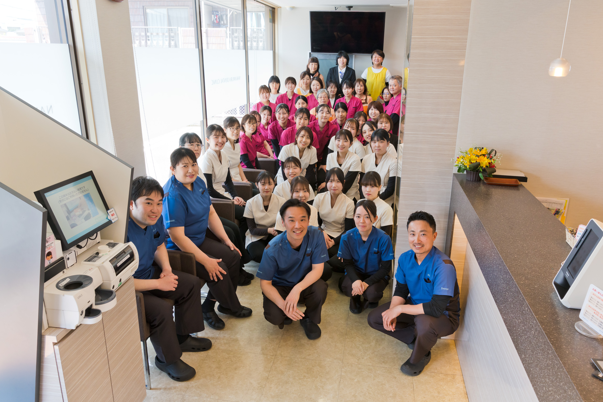
書類選考・面接・見学を経て、ご希望をすり合わせたうえで採用決定となります。
| 項目 | 週5日勤務（常勤） | 週4日勤務（常勤） |
|---|---|---|
| 給与（総支給） | 505,000円 〜 705,000円 | 400,100円 〜 575,100円 |
| 勤務時間 | 8:00〜18:00（休憩60分） | 8:00〜18:00（休憩60分／曜日相談） |
| 休日 | 週休2日（日曜・祝日休み／シフト制） | 週休3日（日曜・祝日休み／シフト制） |
| 休暇 | GW・夏期・冬期・特別休暇・有給休暇 | |
| 福利厚生・待遇 |
社会保険完備・厚生年金・雇用保険・労災／交通費全額支給（新幹線通勤対応）／住宅手当・遠方転居支援／昇給 年1回／セミナー参加支援（規定補助＋意欲に応じた積極支援）／学会出席費用の補助（要相談）／産休・育休制度（男性育休実績あり） ※固定残業代は実際の残業時間にかかわらず支給。設定時間を超えた超過分は別途支給。 |
|
| 応募条件 |
歯科医師免許をお持ちの方（卒後臨床経験2年目以上・ブランク可） 最低3年以上の勤続を希望します |
|
| 選考 | 書類選考・面接・見学（見学のみもOK）。提出書類：志望理由書、歯科医師免許証、写真付き履歴書 | |
関連募集ページ
見学だけ、相談だけでも歓迎です。給与や働き方、教育体制についてお気軽にお問い合わせください。